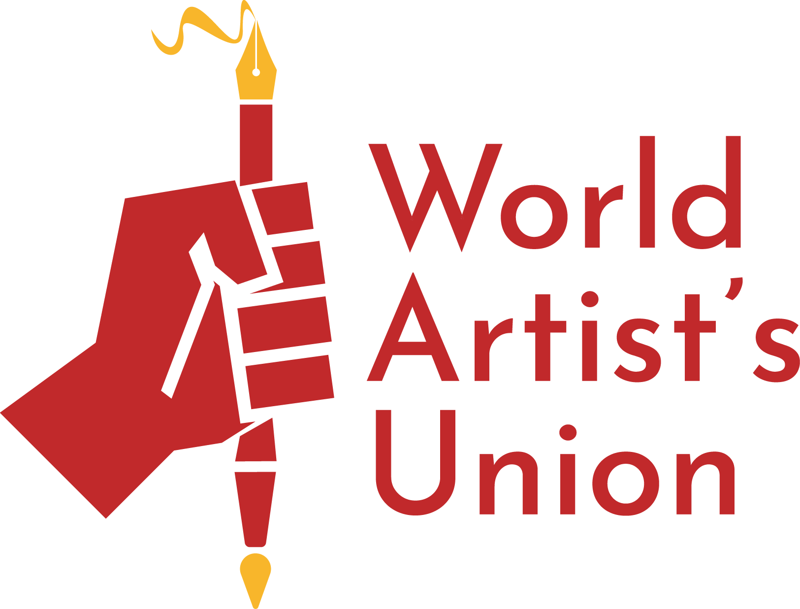

Symbolist Manifesto
Jean Moréas
(We here at Mutable found this manifesto on the web in the original french, and thought we would do our best to give you an english version. It was originally written by Jean Moreas, a Greek poet, art critic, and essayist who wrote in the french language.)
As with all arts, literature evolves: a cyclical evolution with strictly determined returns and which become more complicated of various modifications brought by the step of time and the confusion of circles. It would be superfluous to point out that every new progressive stage of art corresponds exactly to senile degeneration, at the ineluctable end of the immediately previous school. Two examples will be enough: Ronsard triumphs over the impotence of the last impressionists of Marot, Romanticism unfurls its royal flag on the classical debris badly kept by Casimir Delavigne and Steven de Jouy. It is because any demonstration of art succeeds inevitably in becoming impoverished, in exhausting itself; then, of copy in copy, simulation in simulation, what was full of sap and freshness becomes dried out and shriveled; what was the new and the unprompted becomes banal and commonplace.
So Romanticism, having sounded all the tumultuous warning bells of uprising, had its days of glory and battle, lost of its force and its favour, abdicated its heroic boldness, became ordered and classified, sceptical and full of common sense; in the honorable and mean-minded attempts of the Parnassians, Romanticism hoped for a false resurgence, only finally, such a monarch had to fall into senile decay, and in the end was only able to be dethroned for the naturalism in which one could grant seriously a value of protest only, legitimate but poorly advised, against the insipidity of some novelists then in fashion.
One waited for a new manifestation of art therefore, necessary, unavoidable. This manifestation, brooded for a long time, has just hatched. And every insignificant practical joke of the cheery eyed press, all the anxieties of the serious critics, every bad mood of the surprised public in its sheepish carelessness, are only bringing about this actual evolution in french letters more and more every day, this evolution which impatient judges have noted to be, by an incredible antinomy, decadent. However, decadent literature is principally tough, stringy, timorous and servile: all the tragedies of Voltaire, for instance, are marked with these signs of decadence. And for what of these reproaches can be claimed as regards the new school? The abuse of pomp, strangeness of metaphor, a new vocabulary or harmony go together with colours and lines: characteristics of any revival.
We have already offered the name of symbolism as the only one able of indicating reasonably the actual tendencies of the creative mind in art. This name can be supported.
It was said at the beginning of this article that the developments of art offer cyclical extremely complicated differences: for example, to track the exact parentage of the new school we should go back to certain poems of Alfred de Vigny , and on up to Shakespeare, even mystical, even further. These issues would require a volume of reviews, saying that Charles Baudelaire therefore must be considered the true forerunner of the current movement, Mr. Stéphane Mallarmé subdivides the sense of mystery and the ineffable Mr. Paul Verlaine broke his honor in the cruel hindrances to poetry that the prestigious fingers of Mr Theodore de Banville had softened up before him. But the Supreme enchantment is not yet consummated: a persistent and jealous labor invites newcomers.
***
Enemy of education, declamation, wrong feelings, objective description, symbolist poetry tries to dress the Idea in a sensitive form which, however, would not be its sole purpose, but furthermore that, while serving to express the Idea in itself, would remain subjective. The Idea, in its turn, should not be allowed to be seen deprived of the sumptuous lounge robes of exteranous analogies; because the essential character of symbolic art consists in never approaching the concentrated kernel of the Idea in itself. So, in this art, the pictures of nature, the actions of human beings, all concrete phenomena would not themselves know how to manifest themselves; these are presented as the sensitive appearance destined to represent their esoteric affinity with primordial Ideas.
The accusation of obscurity that has been made as regards such aesthetics by readers with broken staffs is not surprising. But what do we make of this? The Pythian Odes of Pindar, Hamlet of Shakespeare, the Vita Nuova of Dante, the Second Faust of Goethe, the Temptation of SaintAntoine of Flaubert were not they also taxed by ambiguity?
For the precise translation of its synthesis, it is necessary for symbolism to take on an archetypal and complex style; of unpolluted terms, periods which brace themselves alternating with periods of undulating lapses, significant pleonasms, mysterious ellipses, outstanding anacoluthia, any audacious and multiform surplus; finally the good language – instituted and updated–, good and luxuriant and energetic french language from before Vaugelas and Boileau-Despréaux, the language of François Rabelais and Philippe de Commines, Villon, Ruteboeuf and so many other free writers hurling their acute language in the same manner as the Toxotes of Thrace hurled their snaky arrows.
Rhythm: the ancient metric enlivened; a chaos learnedly ordered; the rhyme illucescente and beaten as a buckler of gold and bronze, to rhymes of unintelligible fluidity; the alexandrine with numerous and mobile stopping; the job of first certain numbers – seven, nine, eleven, thirteen – bold in the various rhythmic combinations of which they are the price.
***
Here I ask the permission of you to act out my small INTERMEZZO drawn from a precious book: The Treaty of French Poetry, where Mr Theodore de Banville made to relentlessly incite, such the God of Claros, monstrous donkey ears on the head of many a Midas. Attention!
The figures who speak in the room are:
A DETRACTOR OF The SYMBOLIC SCHOOL
MR THEODORE DE BANVILLE
ERATO
THE DETRACTOR. – oh! these decadent! What a grandiloquence! What a rigmarole! Our grand Molière was right when he said:
This style represents a vainglory which they call
Fate of good character and the truth.
THEODORE DE BANVILLE. – our grand Molière describes two evils towards which they themselves bring out as many good characters as possible. Of what good character? Of what truth? Apparent disorder, bright insanity, passionate grandiloquence are the truth of lyric poetry. To fall in the excess of figures and colour, the evil is not great and it is not thereabouts that our literature will perish. In the most poor days, when it expires undoubtedly, as for instance under the first Empire, it is not grandiloquence and abuse of the ornaments which kill it, it is the platitude. Taste and the natural are nice things surely less useful in poetry than they think. The Romeo and Juliet of Shakespeare is throughout written in a style as affected as that of the marquis of Mascarille; that of Ducis shines with the happiest and most natural simplicity.
THE DETRACTOR. – but the caesura, the caesura!
They violate the caesura!! THEODORE DE BANVILLE. – in his remarkable prosody published in 1844, Mr Wilhem Tenint establishes that Alexandrine poetry accepts twelve different combinations, on the basis of poetry with its caesura after the first syllable, to arrive at poetry which has its caesura after the eleventh syllable. It amounts to saying that in reality the caesura can be put after any syllable of Alexandrine poetry. Also, it establishes that it is acceptable to have poems with caesuras after the sixth, seventh, eighth, or ninth, or tenth syllables, of all manner of variety and diverse placement. Let us go further: let us dare to proclaim complete freedom and say that in these complex questions the ear decides alone. They perish always without ever having been too audacious but rather not having been audacious enough.
THE DETRACTOR. – terror! You do not respect the alternation of rhymes! You know, Mister, that the decadent dare to afford even gaps! even gaps!!
THEODORE DE BANVILLE. – gaps, the diphthong clearing up syllables in the poem, all other things which were forbidden and especially the facultative job of the masculine and female rhymes provides the poet of genius one thousand means to create delicate effects always various, unforeseen, and bottomless. But to use this complicated and learned poetry, genius and a musical ear is needed, while with the fixed rules, the most mediocre writers can, by obeying them truthfully, make, alas! fairly good poems! Who therefore earned anything in the regulation of poetry? The mediocre poets. Themselves!
THE DETRACTOR. – it seems to me however that the romantic revolution…
THEODORE DE BANVILLE. – Romanticism was an incomplete revolution. Whatever misfortune Victor Hugo, that victorious Hercules with his bloody hands, is not an absolute revolutionary. He let live a party of monsters who were his responsibility to exterminate with his arrows of fire!
THE DETRACTOR. – any renovation is madness! The simulation of Victor Hugo, here is the starting point of french poetry!
THEODORE DE BANVILLE. – when Hugo emancipated poetry, those who taught using his example had to think the poets to come would like him be free and only constrained by they themselves. But this has become for us a love of servitude which the new poets have copied and imitated in their envy for his forms, the combinations, the chalice, the further habits of Hugo, rather than endeavoring to find the new. That’s how, manufactured for the yoke, we fall again from one serfhood into another one. After the classical banality, there was the romantic banality, the banality of the chalice, the banality of sentences, the banality of rhymes; and the banality, that is to say the commonplace become a compulsive thing, in poetry as anywhere else, it is Death. Contrariwise, let us dare to live! and to live it is to sniff the air of the sky and not the breath of our neighbour, this neighbour he should be a God!
Scène II
(Invisible) ERATO. – your Treaty of French Poetry is a delightful, chief work Banville. But the young poets have some blood until with eyes battling against monsters they graze by the side of Nicolas Boileau; they claim you in the field of honour, and you are silent mister Banville!
THEODORE DE BANVILLE (dreamer). – curse! I would have failed in my duty of elder and of lyricist! (
The author of the Exiles pushes out a pitiful sigh and the intermezzo finishes.)
***
Prose – novels, news, stories, fancies, – evolves in a similar sense as does the poem. Elements, seemingly heterogeneous, coincide in that place: Stendhal brings the translucent psychology, Balzac the swelling vision, Flaubert the cadenzas of sentences in ample volutes. Mr Edmund de Goncourt his evocative modernist impressionism.
The comprehension of the symbolic novel is polymorphous: sometimes a unique figure moves in circles distorted by his clean hallucinations, his constitution; in this distortion lies the only reality. Beings in a mechanical gesture, in shaded silhouettes, fidget around the unique personage: these are to him only pretexts to feeling and to guess-work. This in itself is a tragic or farcical mask, of a humanity nevertheless perfect although rational. – sometimes the mob, superficially affected by the ensemble of ambient representations, itself borne along with these alternatives, these conflicts and stagnances towards acts which will abide in incompletion. By instants, individual wills manifest themselves; they earn, gather together, spread for a purpose which, attained or missed, disperses them in the primitive elements. – Sometimes mythical recalled fantasies, from ancient Démogorgôn through Bélial, from Kabires through Nigromans, appear sumptuously grouped on the rock of Caliban or by the forest of Titania in mixolydian modes of the barbitons and octocordes.
So contemptuous of the babyish method of naturalism, – Mr Zola, shone, was saved by his marvellous writer’s instinct – the symbolic novel – impressionism will build up its edifice of subjective perversion, based on this axiom: that art would not know how to search into the objective, what an extremely succinct and simple starting point.
